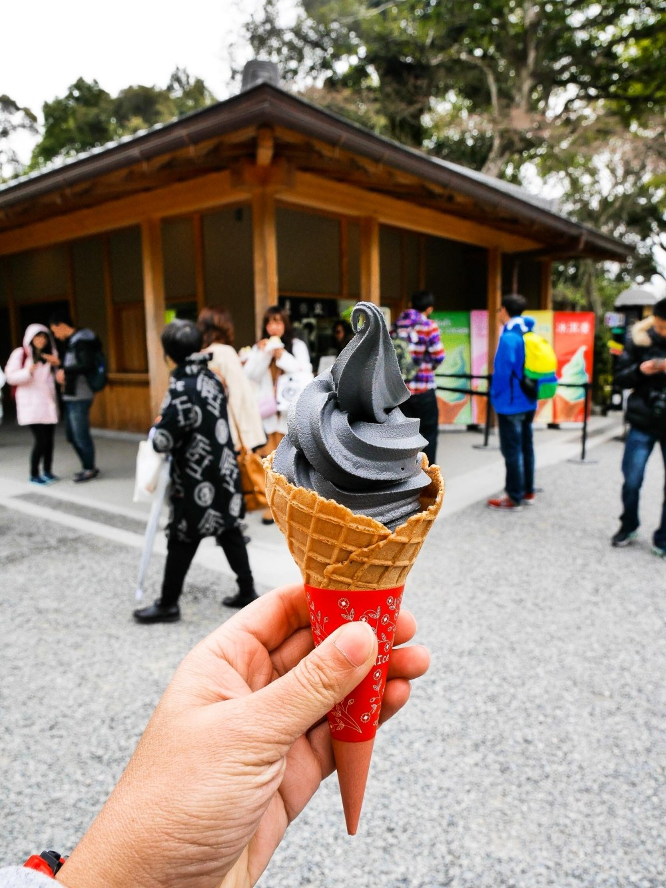

5 fun things to do in Tokyo
1. Tokyo Tower

Even though the tower may get less attention today after Tokyo Skytree was built, still it has been the best symbol of the city. Tokyo Tower is enjoyable either seeing it from distance or gaze the city from the observation deck of the tower itself.
My recommended viewing spot of Tokyo Tower is Zojoji Temple, which is located right next to the tower. The temple is the head temple of the Jodo sect of Japanese Buddhism, and it’s strongly related to Tokugawa clan. The temple made an appearance in the film “The Wolverine”, and became well-known. Or simply check the link below for more great viewing spots of Tokyo Tower.
2. Shibuya Crossing

Shibuya Scramble Crossing has been the hottest photo spot in past years, and when you go there you’ll see many tourists waiting for the best moment for a shoot at the corner of crossing. The world’s busiest crossing are passed by about a half million people daily, the view of passengers coming from the all directions at once when the traffic lights turn green is simply stunning.
Shibuya is known as Tokyo’s most trendy district and it’s home to Japanese young culture. Numbers of large shopping malls, small boutiques, discount stores, bars, clubs, cafes and restaurants are located here.
When it comes to special events, the crossing and the surrounding area are tend to become the place for unofficial street celebration among young people. The most notable one is Halloween Day, when thousands of party lovers in unique costumes gather and roam around the street of Shibuya all night long.
3. Sensoji at Asakusa: Tokyo's Oldest Temple

Tokyo’s oldest temple, Sensoji Temple is located at the historic center of the city, Asakusa area. Take photos of an iconic Kaminarimon gate, stroll down “Nakamise Street”, the approach to the main hall of the temple with traditional street snacks. It’s a great area to experience Japanese traditions while being in this modern Metropolis.
Asakusa is also a great area to eat traditional Japanese cuisine, as there are numbers of long-established Japanese restaurants serving authentic dishes such as Sukiyaki, Tempura and Sushi. Variety of traditional activities can be found in this area, such as riding Rickshaw, wearing Kimono dress, etc. Besides, the area is very close to other tourist attractions such as Tokyo Skytree, Sumida River, Kappabashi Street and Ueno area.
4. MORI Building Digital Art Museum

MORI Building DIGITAL ART MUSEUM — teamLab Borderless opened in Odaiba area, Tokyo in summer 2018 as the very first digital art museum in the world. Since then, it has been one of the hottest spots in town.
The museum offers an unique interactive art experience with the latest high technology. Multiple digital art exhibitions are displayed in a huge space and the artworks are projected across walls and floors, and immersive installations of light and sound move and reflect by your movements and touches.
Lose yourself into the immersive digital artworks! Make sure to take to bring your camera as it’s the perfect place to take Instagram photos. See the below link to get ticket info!
5. Black Sesame Ice Cream & Kinkaku-ji


If you’ve got more time today, take the bus to the Kinkaku-ji (Golden Pavilion), which is super impressive and made entirely of gold! Reflected in the lake, it’s no wonder this is one of the top things to do in Kyoto. Make sure to try Japanese flavored ice cream here, such as green matcha and/or black sesame, my new favorite! It’s guaranteed to be crowded, but very, very worth it in my opinion.